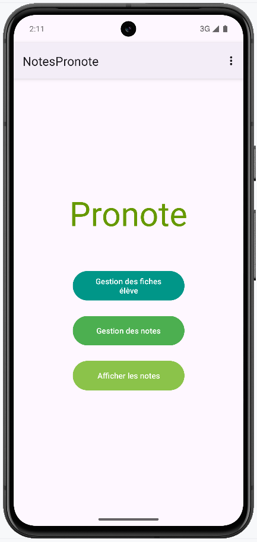
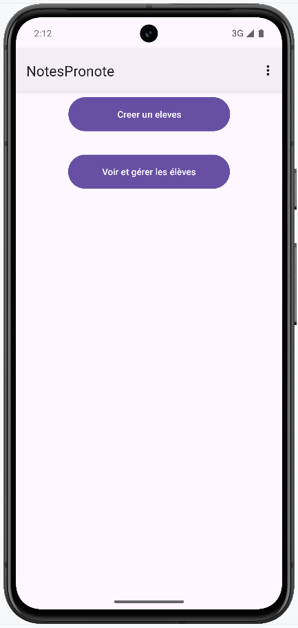
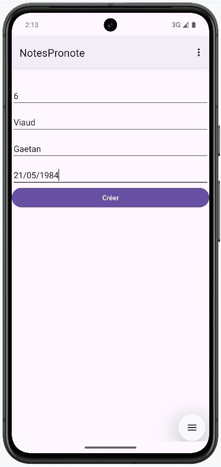
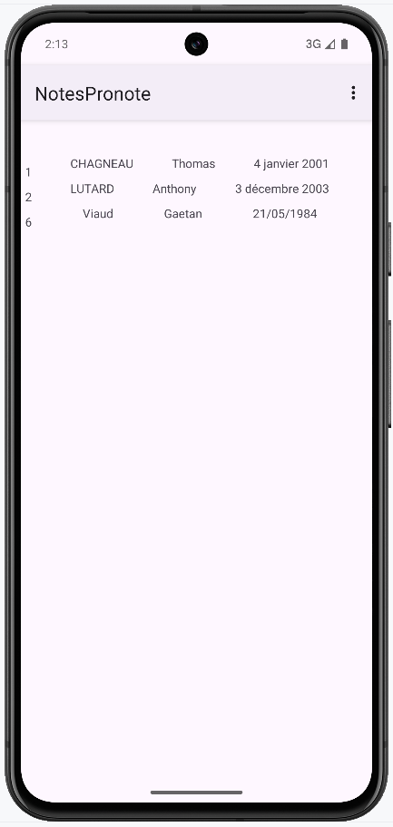
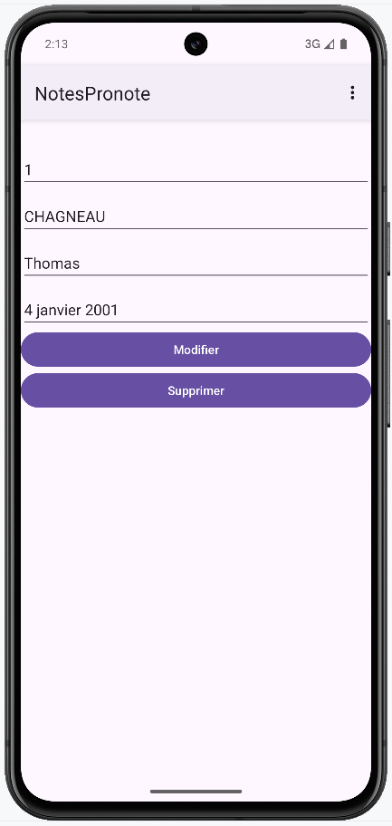
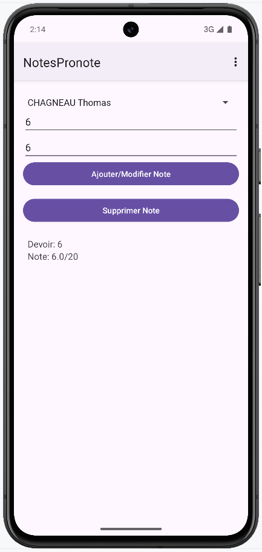
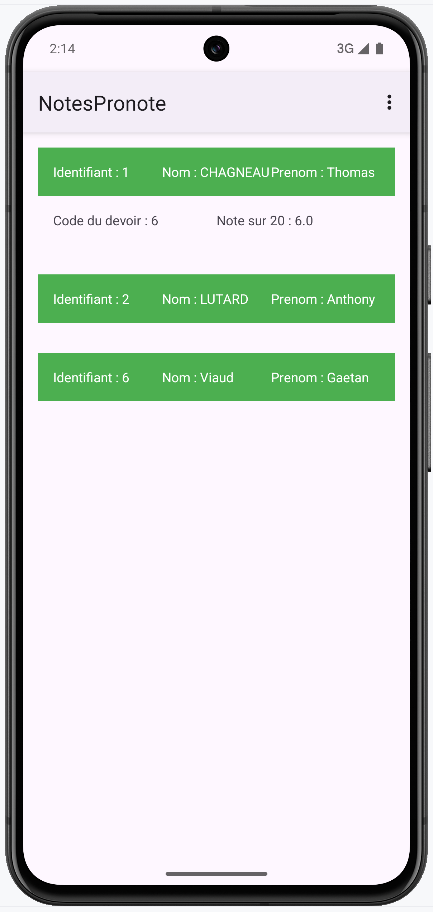

Présentation du projet
Dans le cadre de mon BTS SIO option SLAM, j’ai participé à la réalisation d’une application Android en Java permettant la gestion d'un groupe d'étudiants. On peut consulter, ajouter, modifier ou supprimer un étudiant ou une note d'un devoir pour un étudiant. Et afficher la liste des notes de chaque étudiant.





Technologies et techniques utilisées
- Android Studio : Environnement de développement intégré utilisé pour concevoir et développer l’application mobile Android en Java.
- Room utilisé pour stocker localement les données, sous forme de base de données SQLite.
- DAO structurer les opérations sur la base de données locale.
- RecyclerView, Holder & Adapter pour afficher une liste dynamique d'éléments.


Amélioration de la compétence professionnelle
Ce projet m’a permis d’apprendre à développer la présence en ligne d'une organisation.
En effet, grâce au développement de cette application, j’ai appris à :
- Réaliser une interface utilisateur sur Androïd Studio.